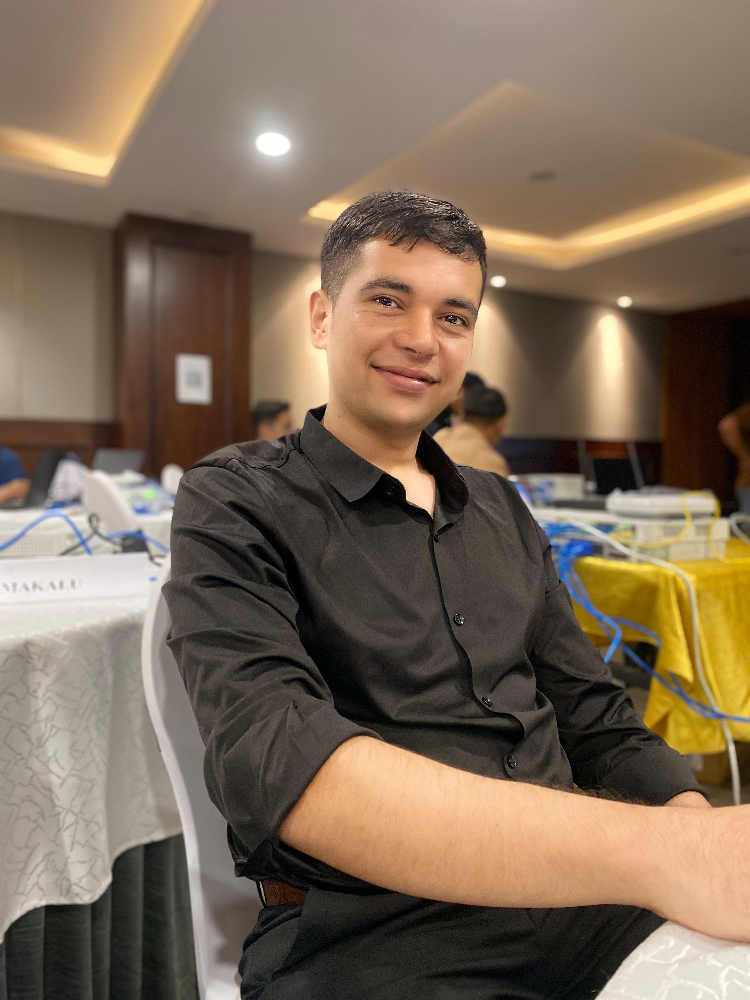

Chalsh Guragain
Technical Support Engineer — Network & Security Infrastructure
Hands-on across the Fortinet ecosystem, Cisco switching & routing, and cloud-managed platforms — keeping enterprise networks running the way I keep this site's ridgelines standing: quietly, and built to hold.
- chalshguragain77@gmail.com
- +977 976-738-6704
- Phedap-2, Terhathum, Nepal
Technical Support Engineer with hands-on experience managing multi-vendor enterprise infrastructure across network, security, and endpoint layers. Skilled in the Fortinet ecosystem — FortiGate, FortiAP, FortiEMS, FortiSIEM — with working knowledge of Security Fabric, SD-WAN, FortiManager, and FortiAnalyzer. Experienced in Cisco switching and routing, along with cloud-managed platforms such as Meraki and Aruba. Comfortable troubleshooting across the full three-tier architecture — Core, Distribution, Access — and every layer of the OSI model.
The trail so far
Technical Support Engineer
Variable Solutions Pvt. Ltd.
- Delivered L1/L2 support and operational management across Core–Distribution–Access enterprise environments.
- Configured Cisco switching and routing, including VLAN segmentation, inter-VLAN routing, and advanced troubleshooting.
- Deployed and administered FortiGate (120G, 401F), FortiAP, FortiSwitch, and FortiEMS.
- Executed enterprise firewall deployments for MetLife Nepal, Nepal Airlines, IEDI, and Custom Office Nepal.
- Managed Fortinet Security Fabric — FortiManager, FortiAnalyzer, SD-WAN — for centralized control and traffic optimization.
- Administered cloud-managed platforms including Cisco Meraki, Aruba Cloud, and Cambium Networks.
- Implemented Software-Defined Perimeter access control using Appgate.
- Ran network monitoring and alerting with Zabbix, and security event analysis with FortiSIEM.
Computer Assistant
Earl Electronics and Technical Institute, Itahari, Sunsari
What I work with
Networking & Infrastructure
Switching & routing (CLI/GUI), three-tier architecture, TCP/IP & subnetting, RADIUS/LDAP, edge & branch networking.
Security & Firewall
Fortinet ecosystem (FortiGate 40F–401F, FortiAP, FortiSwitch, FortiEMS), Security Fabric, firewall policy & NAT, Zero Trust Network Access, FortiSIEM.
Wireless & Cloud
Cambium Networks, Aruba & Aruba Cloud, Cisco Meraki, enterprise WLAN deployment and management.
Systems & Monitoring
Windows Server administration, basic Linux, Zabbix & Observium monitoring, multi-layer OSI troubleshooting.
Cybersecurity
Security fundamentals, FortiSIEM event analysis, incident analysis & documentation.
Programming
Python, HTML, CSS, Bash scripting.
Waypoints along the way
Proof, not just claims
Enterprise Network Migration
Led a large-scale physical and logical network migration — VLANs, voice tagging, and endpoint verification across multi-floor environments — with minimal downtime through the transition.
Government Infrastructure Audit
Ran a full site audit and security assessment for a government facility, evaluating multi-vendor hardware from Dell, Cisco, Fortinet, Palo Alto, TP-Link, MikroTik, and Lenovo.
Automated Monitoring Deployment
Architected a centralized monitoring solution on Zabbix and FortiSIEM, cutting incident response time with custom triggers and automated alerting on critical network paths.
Learning, on and off the trail
Bachelor's in Information Technology (BIT)
Texas College of Management and IT — 2025 to Present
+2 Management
Kasturi College of Management, Itahari, Sunsari — 2019
I'm a passionate IT student with hands-on experience in network infrastructure, cybersecurity, and enterprise system administration — always looking to bridge academic knowledge with real-world practice. Open to roles in SOC analysis, deployment engineering, and pre-sales solutions.